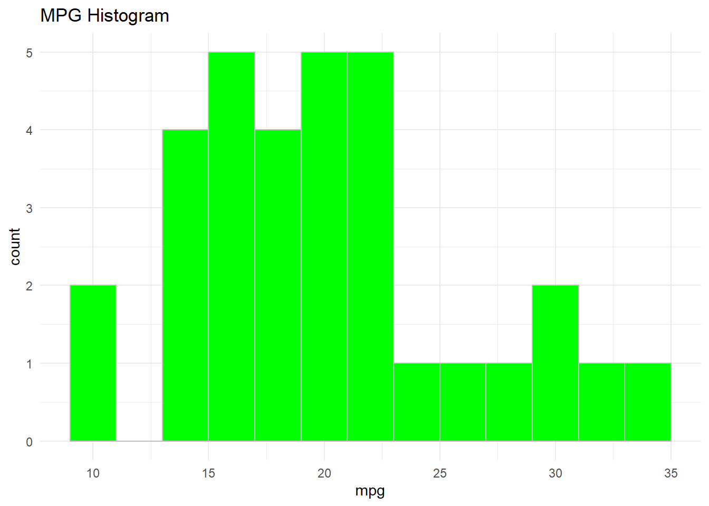
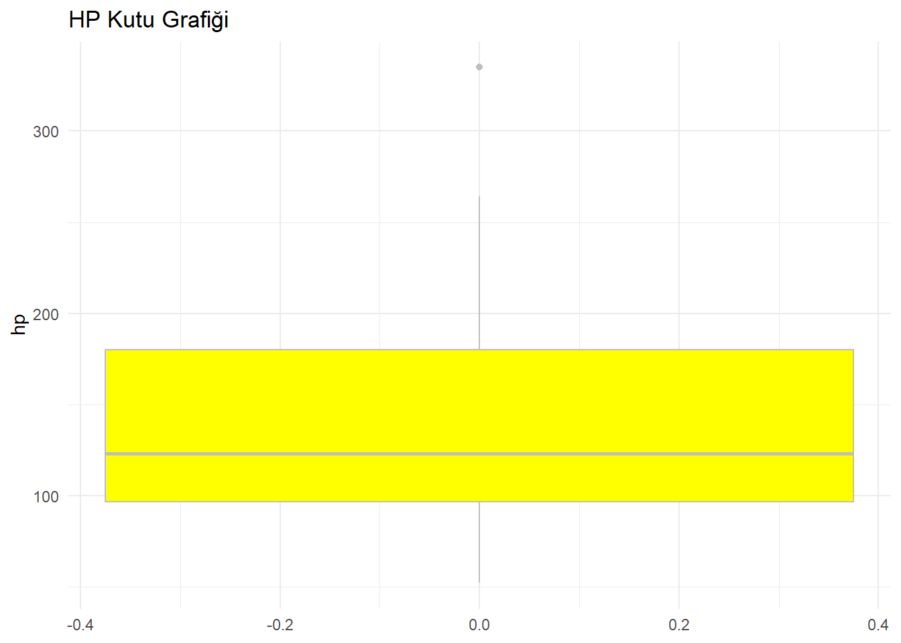

## (a) Video özeti## Veri Bilimi ve Endüstri Mühendisliği Üzerine Sohbetler - Mustafa Baydoğan & Erdi Daşdemir**print("Doç. Dr. Mustafa Gökçe Baydoğan ve Dr. Erdi Daşdemir'in gerçekleştirdiği bu söyleşi, veri bilimi ve endüstri mühendisliği alanlarının kesişim noktalarını ve bu alandaki kariyer fırsatlarını inceliyor.")
[1] "Doç. Dr. Mustafa Gökçe Baydoğan ve Dr. Erdi Daşdemir'in gerçekleştirdiği bu söyleşi, veri bilimi ve endüstri mühendisliği alanlarının kesişim noktalarını ve bu alandaki kariyer fırsatlarını inceliyor."
print("Söyleşi boyunca, veri biliminin karar verme süreçlerini nasıl optimize ettiği, problem çözme yeteneklerini nasıl güçlendirdiği ve çeşitli endüstriyel süreçlerde nasıl verimlilik artışı sağladığı somut örneklerle açıklanıyor.")
[1] "Söyleşi boyunca, veri biliminin karar verme süreçlerini nasıl optimize ettiği, problem çözme yeteneklerini nasıl güçlendirdiği ve çeşitli endüstriyel süreçlerde nasıl verimlilik artışı sağladığı somut örneklerle açıklanıyor."
print("Özellikle, veri analizinin maliyet düşürme ve verimlilik artırma gibi kritik konulardaki katkıları detaylandırılıyor.")
[1] "Özellikle, veri analizinin maliyet düşürme ve verimlilik artırma gibi kritik konulardaki katkıları detaylandırılıyor."
print("Geleneksel öğrenme ve derin öğrenme yöntemleri arasındaki farklar ve bu yöntemlerin uygulamalı örnekleri de ele alınıyor.")
[1] "Geleneksel öğrenme ve derin öğrenme yöntemleri arasındaki farklar ve bu yöntemlerin uygulamalı örnekleri de ele alınıyor."
print("Tahmin modellerinin doğruluğunun karar verme süreçlerindeki önemi, uygulamalı örnekler üzerinden açıklanıyor.")
[1] "Tahmin modellerinin doğruluğunun karar verme süreçlerindeki önemi, uygulamalı örnekler üzerinden açıklanıyor."
print("Söyleşi, Doç. Dr. Mustafa Gökçe Baydoğan'ın, veri bilimi ve endüstri mühendisliği alanlarında kariyer hedefleyen öğrencilere yönelik tavsiyeleriyle sona eriyor.")
[1] "Söyleşi, Doç. Dr. Mustafa Gökçe Baydoğan'ın, veri bilimi ve endüstri mühendisliği alanlarında kariyer hedefleyen öğrencilere yönelik tavsiyeleriyle sona eriyor."
## (b) Fonksiyonlar ve Döngüler ile Verileri Özetleme
# dslabs paketini yükleme ve na_example veri seti ile çalışma:library(dslabs)data("na_example")# NA değerlerinin sayısını hesaplana_count <-sum(is.na(na_example))cat("NA Sayısı:", na_count, "\n")
NA Sayısı: 145
# NA değerlerini 2025 ile değiştirmecleaned_data <-ifelse(is.na(na_example), 2025, na_example)# Güncellenmiş veri setinin artık eksik değer içermediğini göstemena_after_cleaning <-sum(is.na(cleaned_data))cat("Temizlendikten Sonra NA Sayısı:", na_after_cleaning, "\n")
Temizlendikten Sonra NA Sayısı: 0
# 2025 değerinin veri seti içinde kaç kez geçtiğini raporlamacount_2025 <-sum(cleaned_data ==2025)cat("2025 Değeri Kaç Kez Geçiyor:", count_2025, "\n")
2025 Değeri Kaç Kez Geçiyor: 145
# BONUS mtcars veri seti ile çalışmalibrary(ggplot2)install.packages("ggplot2")
Warning: package 'ggplot2' is in use and will not be installed
library(tidyverse)
── Attaching core tidyverse packages ──────────────────────── tidyverse 2.0.0 ──
✔ dplyr 1.1.4 ✔ readr 2.1.5
✔ forcats 1.0.0 ✔ stringr 1.5.1
✔ lubridate 1.9.4 ✔ tibble 3.2.1
✔ purrr 1.0.4 ✔ tidyr 1.3.1
── Conflicts ────────────────────────────────────────── tidyverse_conflicts() ──
✖ dplyr::filter() masks stats::filter()
✖ dplyr::lag() masks stats::lag()
ℹ Use the conflicted package (<http://conflicted.r-lib.org/>) to force all conflicts to become errors
library(dslabs)data("mtcars")# Histogram: mtcars veri setindeki mpg değişkeninin dağılımıggplot(mtcars, aes(x = mpg)) +geom_histogram(binwidth =2, fill ="green", color ="grey") +ggtitle("MPG Histogram") +theme_minimal()

# Kutu grafiği: mtcars veri setindeki hp değişkeni içinggplot(mtcars, aes(y = hp)) +geom_boxplot(fill ="yellow", color ="grey") +ggtitle("HP Kutu Grafiği") +theme_minimal()

# Dağılım grafiği: mpg ve hp değişkenleri arasındaggplot(mtcars, aes(x = mpg, y = hp)) +geom_point(color ="pink") +ggtitle("MPG vs HP Dağılım Grafiği") +theme_minimal()